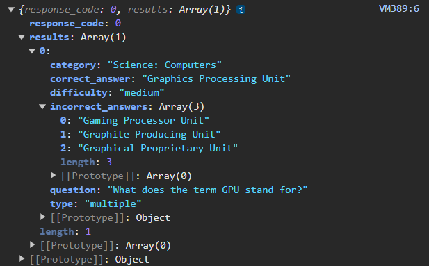

1) For now, let's generate a single multiple choice question in any category. Have the API website generate an API URL, and save that URL as a variable in your project.
2) We're going to use
getData to get information from this URL. Once Woof has received the data, print it out in the console.
Play this demo in full screen.
3) Explore the data in your console, which requires Inspecting the page. You'll probably need to expand out the data to see how it is organized. It will likely look something like:

4) Make a text sprite that displays the question's text. You'll need to follow the data's organization from the console to properly display the question.
Play this demo in full screen.
5) Display the choices for the multiple choice question. (Hint: The correct answer is stored in a separate field from the incorrect answers)
Play this demo in full screen.
8) (Challenge) Include more than one question. You should modify the API URL to retrieve multiple questions at once, and may want to write a function that sets up the sprites for a question.
Play this demo in full screen.